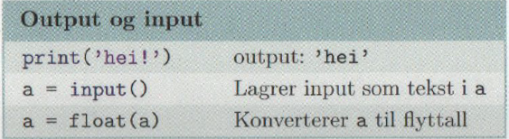

Kurs for lærere i Sauda vgs (xx.xxx 2021)
Vidaregåande informasjon om koding i Python
Program:
Lite introduksjon
Programvare for Python : Trinket eller Thonny
Å komme i gang : Tall, variabler, input og lister
Litt videre : Løkker, vilkår og funksjoner
Oppgaver for i dag
Ekstra om Python
Ved spørsmål, gjerne ta kontakt med (Ola B. og / eller
(Martijn B. )
Kilder:
Haraldsrud, A.D., Sveinssom, H.A. og Løvold, H.H.: Programmering i skolen , 2020. Universitetsforlaget, Oslo, 318 pp.
Bueie, H.: Programmering for matemattikk-lærere , 2019, Universitetsforlaget, Oslo, 205 pp. 5 eksemplarer i skole sitt bibliotek!!
Hvordan algoritmer
styrer vårt daglige liv . Animasjon, oversett fra Nederlandsk. Lastet ned nrc.nl , dd. 28 november 2018.
Flere websider, klikk på lenker...
Introduksjon
Learning by doing. Hvorfor programmering og programfag Informasjonsteknologi?
Er det nok fokus på programering i vgs? (se meningsmåling hos studenter OsloMet her , november 2019)
Lære å mislykkes, programmering er ikke lett (prøv, test, får feilmeldinger, prøv på nytt -> læringsprosess!)
Kritisk tenkning og problemløsende evne, å programmere hjelper å utvikle dette
Omdanne kreativitet til et håndgripelig produkt
Forstå hvordan den digitale verden fungerer (se video nedenfor, algoritme_ST)
Jobbmuligheter (se ung.no , for eksempel...)
VIDEO
Kort gjennomgang i forskjellige karruseller.
Tilbake til tops
Programvare for Python: trinket eller Thonny
Klikk her eller
her (NDLA) for å komme i gang med en online,
web basert python interpreter (Trinket). Gode muligheter til å bruke i matte- og fysikk-undervisning
(Slik kan programmering endre skolen) og se på denne youtube kanal fra Andreas Haraldsrud (foredragsholder i Kopervik, dd. 13.februar 2019, bruker Anaconda
som python editor).
Thonny: Hvorfor bruke Thonny?
Enkelt og oversiktlig, god egnet for nybegynnere
Lik bruk på forskjellige platformer (Windows, Mac og Linux), for eksempel installering av moduler
Gode tilbakemeldinger når du har gjort noe feil (Assistent)
Enkelt å lagre arbeid
Gode biblioteker, enkelt å laste ned
God dokumentert på nettet
Min bestevenn heter Ton, better known as T(h)onny ;-)
Tilbake til tops
Å komme i gang: Tall, variabler, input og lister
Variabler
Det finnes heltall (Z: integer), desimaltall (R: float) og tekst (string).
Output og input
Vi trenger å hente inn data (input: definere variabler eller spør bruker å legge inn data) og vi bør skrive ut data (output i konsol).

Tilbake til tops
Litt videre: Løkker, vilkår og funksjoner
Tilbake til tops
Oppgaver for i dag
Tilbake til tops
Ekstra om Python
Til slutt noen muligheter å komme i gang med programmering (python, Java, JavaScript, HTML, CSS, PHP, MySQL osv):
Nettressurser til å bruke python i vidaregåande skuler.
Anaconda : programvare som blir brukt av Andreas Haraldsrud, Kopervik vgs
Python kan også bli brukt til å programmere microbit.
Derfor trenger du å laste ned Mu programvare på din data. Klikk her for å laste ned Mu
Trinket : Intro i python
Noen eksempler : matte og Naturfag (lokus.no)
Codecademy : fra websider til litt mer
avansert programmering (blir mindre fri tilgang)
Coursera : fra kurs til mer
Sololearn : mer avansert programmering
W3Schools : norsk webside som oppsummerer alt med å bygge websider fra scratch
Tilbake til tops
Hovedside
 I oversikt ovenfor blir det definert forskjellige variabler: a, b, .... , f. Eksempel: variabel a er lik (=) 4.
I oversikt ovenfor blir det definert forskjellige variabler: a, b, .... , f. Eksempel: variabel a er lik (=) 4.